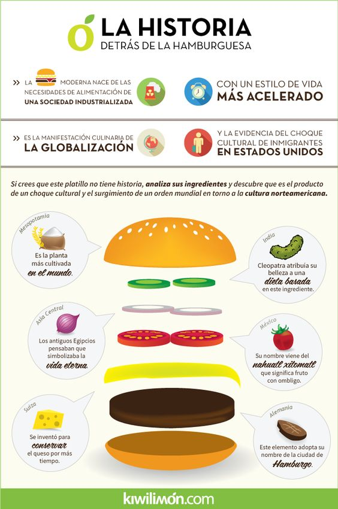

Una hamburguesa es un sándwich hecho a base de carne molida o de origen vegetal,
aglutinada en forma de filete cocinado a la parrilla o a la plancha, aunque también
puede freírse u hornearse. Fuera del ámbito de habla hispana, es más común encontrar
la denominación estadounidense burger, acortamiento de hamburger.
Link del Restaurante

- Hammburguer Sensilla
- Hammburguer Doble